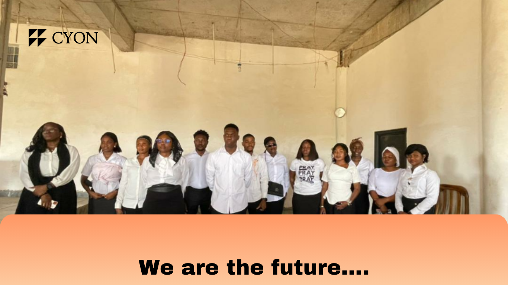

Welcome to the official website of the Catholic Youth Organization of Nigeria (CYON) at St. Benedict Catholic Church, Lokogoma. Engage with fellow youth, grow spiritually, and access exclusive church content tailored for young members.

"To nurture a vibrant, spiritually empowered Catholic youth community in Nigeria that lives out Christ’s teachings, fosters unity, promotes social responsibility, and inspires faith through active engagement, prayer, and service. Connecting the youth. Growing spiritually. Serving with love."
CYON is the official platform of St. Benedict Catholic Church, Lokogoma, created to help members stay connected, grow spiritually, and access important church updates and teachings.
✔ Exclusive teachings
✔ Community updates
✔ Premium access